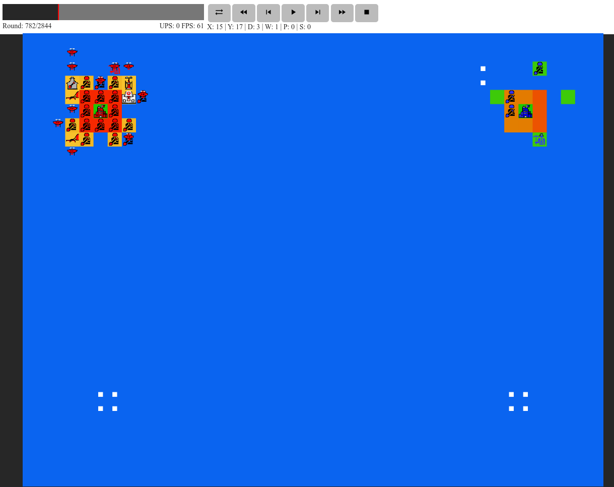
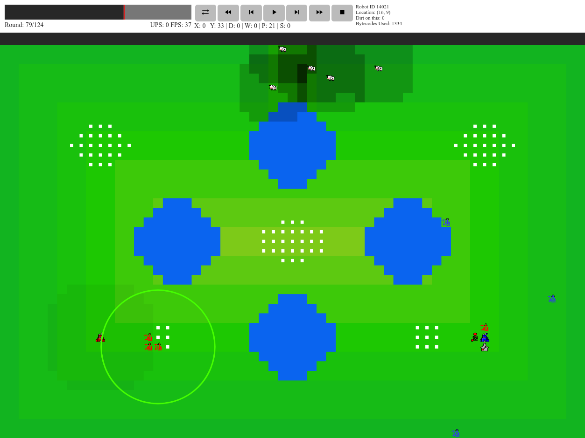

In this year's competition, teams play against each other on a grid of size ranging from 32x32 to 64x64. Each team has an HQ, other buildings, and an army of units, and the game ends when one of the HQs is destroyed. This can happen in two ways:
An HQ is buried in dirt
An HQ is flooded
Burying Buildings in Dirt
Arguably the most important unit in the game is the landscaper, which can pick up dirt from any square adjacent to itself and then deposit that dirt on another adjacent square. Piling a sufficient amount of dirt on a building will crush it, so burying the enemy buildings is the primary method of attack (and removing dirt from your own buildings is an important defense). In particular, depositing 50 dirt on the enemy HQ (in excess of what they managed to remove) will automatically win the game.
The red team (our group's submission) burying the HQ of the blue team (the sample player released by teh devs). The landscapers are the units with shovels. The enemy HQ is already underneath 49 dirt; it will be buried next turn.
Flooding
Each tile on the board has a starting elevation, which is changed whenever landscapers add or remove dirt. Over the course of the game, the global water level rises, slowly at first, but exponentially faster as the game progresses. At the end of each round, the floodwaters spread from water tiles to any adjacent tile whose elevation is lower than the global water level. The HQ can be defended (although not indefinitely) by surrounding it with a high wall and hoping the opponent's HQ floods first.

The red team and blue team both constructing defensive walls to prepare for the rising flood. The red team's wall is higher since red has more landscapers dedicated to wall construction. Note that the map is almost completely flooded at this point.
Types of Robots
To help you on this mission of burying the enemy HQ and/or surviving the flood, your team is allowed to construct multiple types of robots with different abilities.
Robots are classified into two types: units and buildings. Units can move around the map (at a rate of 1 square per action; diagonal movements are allowed). Buildings can never be moved once they are built and are destroyed by being covered in a sufficient amount of dirt (which varies by building).
Landscapers
We have already seen this robot, which can move dirt around. Each turn, it can either pick up or deposit one unit of dirt. Landscapers can carry a maximum of 25 dirt, which can be useful when moving it around the map.
Miners
Miners are the worker units of the game. They are the only units that can construct buildings. They also collect the resource of the game, soup, which must be spent in order to construct other robots.
The map is initially populated with multiple soup deposits, totaling tens of thousands of soup. A miner can collect up to 7 soup per action and can carry up to 100 total soup. Miners can also deposit their soup in a refinery, where it is processed and then added to the team's soup pool.

Red miners collecting soup from a soup deposit. The map started out vertically symmetric, so the soup deposit near the blue HQ is untouched, whereas the one near the red HQ is about halfway depleted.
Delivery Drones
Delivery drones can pick up other units, either friend or foe. They are the only units that can enter flooded tiles, and they are also the only units that are allowed to move to tiles of arbitrary elevation (other units are only allowed to change their elevation by at most 3 when they move). They can therefore transport land units across otherwise impassable barriers in order to attack the enemy HQ or to move to soup locations. They can also be used to attack enemy units; picking up a unit and dropping in a flooded tile will destroy that unit. Drones also move slower than land units -- they move twice every three turns, as opposed to other units that move every turn (unless slowed by pollution).
Cows
Cow stomachs contain gut micromes that produce large quantities of methane as a by-product of digestion, to the tune of 250-500 liters per day. This is simulated in Battlecode 2020 through a local pollution variable, which slows units down and restricts their vision radius when near a source of pollution. As such, cows decrease productivity and speed of nearby units. This can be mitigated by removing cows via delivery drone and either drowning them or, even better, dropping them near the enemy HQ.
A cow that could be dropped near the enemy HQ as part of an attack.
Design Studio
This building produces landscapers. Like the HQ and all other buildings, it can be destroyed by being buried in dirt.
Fulfillment Center
This building produces delivery drones.
Refinery
After collecting crude soup from around the map, miners must deposit their soup in a refinery, which converts it into refined soup that can then be used as the currency of the game (to build units and buildings). Refineries also produce a small amount of pollution in their vicinity while refining soup.
Vaporator
This building produces soup by condensing soup vapor from the air, with no miner input necessary. However, it is expensive and produces soup slowly, taking 250 turns until it pays for itself. It is also fragile and vulnerable to both burying and flooding. Nevertheless, vaporator building can be quite powerful, allowing for exponentially growing soup in games that can last 3000 turns or more.
Net Gun
This building shoots down nearby drones, which are immediately destroyed and then drop their payload. However, it can only shoot one drone per turn, so a large swarm of drones can overwhelm net gun defenses.
Headquarters
This is the most important building of the game, since its destruction immediately results in your team's defeat. It is also the most difficult building to destroy (it must be piled under 50 dirt, whereas all other buildings die from 15 dirt). It has a built-in net gun and refinery, and it is also the only building that can produce miners.
Vision and Communication
Each robot (both buildings and units) only have a limited vision radius (approximately 6 tiles for the HQ, 5 for miners, and 4 for other units). When passing through polluted areas, this vision radius decreases even further. Unlike many computer games, vision is not shared by all the robots on the team; each robot only has access to what it can see by itself.
In order to share information, robots use the blockchain, a globally-readable list of integers. On each turn, at most seven blocks are added to the blockchain, each consisting of seven 32-bit integers. Writing to the blockchain requires soup, and if more than seven messages are sent to the blockchain (rare in practice), the seven messages with the highest bids are written, and other messages are saved until the next round. It is not recorded who sent each message, so at least some of the information in the message must be used to convey which team the message belongs to. (Some teams also encrypted their messages to defend against snooping or spoofing their communications.)
Due to the cost of transmitting information, our team reserved this for the most important cases -- our HQ location, the enemy HQ location, and some signals needed for a couple units to coordinate strategies. Except for these limited cases, units would mostly make their own decisions about attack, defense, and movement based on the positions of nearby units and buildings. As much as possible, robots would be built in locations where their strategy would be obvious to them: miners were spawned as close as possible to nearby soup, offensive design schools and landscapers would be spawned adjacent to the enemy HQ, and defensive design schools and landscapers would be spawned within sight of the friendly HQ. Furthermore, units could sometimes infer a strategy from the actions of other robots: A miner with no knowledge of any soup locations that sees another miner nearby might follow the latter in the hopes that it has more actionable information.
Navigation and Bytecode Limitations
In Java, the compiler converts .java files into .javac files, which contain instructions for the Java virtual machine. A bytecode in Java is one specific instruction (e.g. an arithmetic operation or a variable assignment). To keep the computational cost of running the competition reasonable (and to encourage teams to write efficient code), each robot was only allotted a certain amount of bytecode per turn (typically around 10,000). Any additional tasks would be delayed until the next turn (which might mean that a robot would forfeit its movement, attack, etc.).
Most of the robot actions are fairly simple (bury a nearby building in dirt, check tiles to see which contain soup, shoot down the closest drone), but optimized navigation is difficult. Since robots (other than drones) cannot change their elevation by more than three units in a turn, certain tiles are accessible from some directions but not others. As a result of this (and non-convex features in the landscape), the straight-line path between two points may not be optimal or even permissible, requiring a more intelligent algorithm.
Broadly speaking, a navigation algorithm has two steps:
Determine which tiles connect to which other tiles, forming an adjacency graph on the set of tiles.
Given an adjacency graph, determine the optimal path from the starting point to a given endpoint.
Step 1 is straightforward but surprisingly bytecode intensive. For each tile in a region, we must query whether it is on the map, unoccupied, and not flooded, and we must determine its location. (Such queries about the state of the game all have fixed bytecode cost.) For any pair of adjacent tiles, we must also determine whether the difference in elevation is at most 3. These steps combined cost about 100 bytecode per tile. As a result, it was not feasible to inspect all or even most of the tiles within a robot's vision radius, so we typically limited ourselves to a 5-by-5 grid centered at the robot's location and just tried to optimize navigation within this smaller grid.
Step 2 is done by an iterative method. The squares on the grid surrounding the robot are initialized to their distance from the target location (which can be outside this grid or even outside the robot's vision radius), multiplied by a large constant (we used 100). Then, on each iteration, each square is updated to be the minimum of its current value and (each neighbor's value + 1), where neighbors are defined using the adjacency graph from step 1. Thus, after enough iterations, the square with the smallest number will be the one closest to the target, and all other connected squares will have a number reflecting how many turns needed to get to the square closest to the target.
In principle, this could take many iterations (as many as 24 to fill the entire 5-by-5 grid). In practice, this can usually be terminated after a few iterations (we chose 3) and still provide an optimal or close to optimal result. After the iterations are finished, the robot will choose the square adjacent to it with the lowest number, which will reflect the optimal move.
With limited computational resources and vision radius, a truly optimal navigation algorithm is not possible. In some cases, this method will fail (for example, if there is an obstacle larger than a few tiles that our robot is not able to navigate around). To protect against this, each robot saves a few of the most recent locations to determine if it gets stuck, and if so, it will try a different navigational method. (A less efficient but more robust method is so-called "bug navigation," where the robot will hug the right wall whenever it meets an obstacle.) The two-pronged approach allows us to avoid most obstacles efficiently and remaining obstacles eventually.
Loop Unrolling
To sum up, say, 10 integers in an array, one could write
int sum = 0;
for (counter = 0; counter < 10; counter ++)
sum += array[counter];
return sum;
However, this is somewhat inefficient: in addition to actually performing the arithmetic operation, each operation in the loop requires us to increment the variable counter and access the element of the array indexed by counter. Combined, these operations can be more expensive than the arithmetic itself. In defiance of practices taught in introductory CS courses, it is more efficient to store the elements in ten different variables rather than an array and simply write this as the unrolled loop
to eliminate the overhead costs associated with arrays. This has the disadvantage of requiring us to hard-code in the number of variables used at compile time. However, since the size of our navigation grid is already fixed by computational cost limitations, hard-coding this grid size at compile time isn't really a disadvantage.
As such, the first iteration of our code, where we stored a 5-by-5 grid around our robot as a 2-D array, quickly exhausted our available bytecode. Unrolling the loops and storing everything as individual variables rather than arrays cut the bytecode cost by more than a factor of two. Keeping track of so many variables by hand would be unwieldy (the unrolled loop was a little more than 1000 lines of Java code), so we wrote a separate Python script to generate this. (Having a separate script to create the unrolled loop was also easier to debug and optimize than manually changing the Java code it generated.)
Strategies
Since there are two ways to win Battlecode -- burying the enemy HQ and waiting for it to flood -- the game supports multiple different strategies. It is also necessary to defend against other teams' implementations of these strategies.
Rush
The rush strategy tries to win the game as quickly as possible, before the opposing team can mount a defense. Typically, the rush strategy either wins in less than 150 turns or fails. There are several variants of this strategy based on the unit leading the rush:
Landscaper rush: This is the simplest rush, where a large number of landscapers are produced near the friendly HQ, and the army of landscapers then advances on the enemy HQ to bury it. This has the advantage that landscapers can dig their way through high walls and flooded tiles that they encounter on the way.
Miner rush: This is a variant of the landscaper rush where the landscapers are built near the enemy HQ. A single miner runs toward the enemy HQ and builds a design school as close to it as possible (possibly adjacent to it). This ends up being easier to coordinate (all landscapers see the enemy HQ as soon as it is produced) and is also more efficient, since the soup needed to build the landscapers accumulates in about the same amount of time that it takes the miner to find the enemy HQ. This is illustrated in the image at the top of this page, where we used it to win in 125 turns.
Drone rush: This is similar to the landscaper and miner rushes except that the attacking units are transported to the enemy HQ using drones. On maps divided by water (or large elevations), this is the only feasible way to attack. However, it is significantly more expensive and slower, both due to drones' slower movement and due to relatively high cost of building a fulfillment center and drone before the rush can commence.
Our team initially used a miner rush that turned into a drone rush if the miner encountered an obstacle. However, as the competition progressed and other teams developed better defenses, the drone rush became too slow to be viable. We ultimately decided to use the miner rush exclusively and abandon the idea of rushing if our miner was unable to reach the enemy HQ.
Turtle
The turtle strategy involves building the highest possible wall around the HQ. Since landscapers can deposit dirt either on their own square or any adjacent one, it is possible to fill most of the squares within 2 units of the HQ involved in wall construction. In such a case, the landscapers two squares away will build a low outer wall (to protect themselves from flooding) and a much higher inner wall (to protect the HQ). The outer wall will flood first, but the landscapers on the inner wall will survive until the end of the game.
It is important to have the largest turtle possible, but it is also important to start constructing the turtle early (so that landscapers will be piling dirt on the wall for as many turns as possible). A failed early rush that consumes a large amount of resources will mean fewer resources for the turtle, delaying it and making it smaller.
Economy
The economy strategy involves spending resources building the economy, first by building miners and refineries, and then by building vaporators. Since vaporators cost 500 soup and produce 2 per turn, building vaporators allows a team to double its soup production every 175 (=250 ln 2) turns or so. The difficulties in this strategy involve defending against rush and protecting vaporators from flooding and enemy units.
After accumulating tens of thousands of soup, a team with a large economy can build hundreds of attack units (landscapers and delivery drones) that can all swarm the enemy HQ in the mid or late game. A large swarm of drones can overwhelm the single net gun on the enemy HQ. The surviving drones can then remove enemy landscapers (effectively ending wall construction) and drop landscapers to bury the now-defenseless enemy HQ.
Fortified Turtle
A turtle is vulnerable to a drone attack (especially with drones carrying landscapers) in the mid- to late-game. This strategy can be countered, at least to some degree, by various defenses:
Net guns can be built into the turtle to shoot down incoming drones. If, say, four net guns surround the HQ, the rate of shooting drones can increase from 1/turn to 5/turn. This can stop a small drone rush and can at least reduce the effectiveness of larger ones.
Since only one unit can occupy a square at a given time, a wall of friendly drones is impervious to enemy drones. Friendly drones (like enemy drones) are invulnerable to the flood and can therefore survive into the late game. Furthermore, since drones are invulnerable except to net guns, drones near the friendly HQ (and therefore away from most enemy net guns) are difficult to attack in the late game. Other than managing to build a net gun on an island (which is hard, since few islands exist), the only real counter to a drone wall involved terraforming the map with landscapers and then building a net gun within range of the enemy HQ.
Competitions and Strategy Evolution
The Battlecode competition comprises several rounds:
Sprint tournament: Held one week into the competition, this allows teams to test prototype designs.
Seeding tournament: This affects the seed in the next tournament. We viewed this tournament as relatively unimportant, although in hindsight the seeding of the next tournament is more important than we initially thought. (This is still the least important of the tournaments leading to the finals, in that even teams that do not participate here still have a chance of winning overall.)
Qualifying tournaments: This is split into separate tournaments for US and international teams, mostly because of funding constraints for bringing international teams to the finals. The US qualifying tournament takes the top 12 teams to advance to the finals.
Final tournament: This is the culmination of Battlecode, where the top 16 teams (12 US, 4 international) compete for the grand prize.
Between the tournaments, scrimmages are held continuously to let teams test their strategies against each other. Shortly before the later tournaments, these were paused to avoid leaking strategies, but in earlier rounds the benefit of testing your strategy usually outweighs the disadvantage of leaking it.
A rush strategy is reasonably simple to implement and, especially on the smaller maps, is difficult to defend against. Given the relative ease of programming it (relative to defending against it), it was a particularly good strategy in the early stages of Battlecode. We implemented a miner rush in the first day of the competition, which worked well on maps where there was a connected path between the two HQs. We then switched to a drone rush on maps where the miner rush failed. If both drone and miner rush failed (i.e. if all our attacking units died and we accumulated more soup than the rush could be consuming), we switched to the turtle strategy.
The large-economy strategy debuted in the scrimmages a couple days before the Sprint tournament. However, it is a relatively difficult strategy to implement well, as it requires building a fairly complicated terrace structure to shelter the economic generators (vaporators) from the floodwaters, which was difficult to perfect by Sprint. As a result, with a fairly simple rush strategy, we were able to take second place in the Sprint tournament.
Despite our relatively simple strategy, we still had serious bugs of our own in Sprint. In order to construct a defensive turtle in the case of a failed rush, we needed to build a design school near our HQ. In our first iteration of our code, we hard-coded in this design school's location to be 4 units south of our HQ, which worked well on the testing maps given out pre-Sprint. Unfortunately, this failed quite badly on many of the maps where this square was inaccessible (off the map, flooded, too high an elevation, etc.). This was a valuable lesson for coding in general: Programs need to work in cases beyond the obvious ones, and an important part of programming is dealing with edge cases.
For the Sprint tournament, our code was also extremely disorganized, written in a single Java file. Fortunately, teh devs discussed code organization during the second week of class and how to use Java's object-oriented structure to simplify code design, avoid repetition of functions, and aid debugging. This was useful, especially as our codebase was growing due to the inclusion of more edge cases and optimizations.
Most of our optimizations were fairly modest, from improving the handling of edge cases to deciding how many miners should gather soup to improving pathfinding. We abandoned drone rush once other teams developed better rush counters. By the qualifying tournament, most of the top-tier teams had a large economy and could send droves of drones at our defensive turtle in the late game. We responded to this by building defensive net guns (for qualifying tournament) and an army of defensive drones (for finals).
We also -- very belatedly -- realized the value of vaporators to boost the late-game economy. In the final hour before the submission deadline, we built our first (and only) vaporator on the outer edge of our defensive turtle, where it could provide the economic revenue to purchase the late-game landscapers, net guns, and drones that we needed.
The rush strategy, which had been quite successful early on, was substantially weaker by the final tournament but still seemed like a net positive to attempt. (In part, this was because "rush faster than the opponent" was the easiest way for us to counter enemy rushes.) While it did drain some early game resources, it also dug holes in inconvenient locations that impaired other teams' wall building, so even an unsuccessful rush was not a total loss. That being said, most games in the final tournament were decided after the initial stages of the game.
The final tournament was a double-elimination structure, where each team had to lose to two other teams to be removed from the competition. We won against the first three teams but lost our first match in the semifinals to Java Best Waifu, which had a sufficiently large economy that they were able to overwhelm our defenses.
We then progressed to the losers' bracket, where we faced off against smite. To win, we had to defeat them in at least three of the five matches, and we went 2-2 against them in the first four. In the final match, our rush came close to succeeding but ultimately failed, and both sides began fortifying against the rising floodwaters. The 3000-turn match culminated in a nail-biting ending, where our HQ flooded one turn before theirs. Ultimately, we took third place in the final tournament, much better than we had been hoping for.
Acknowledgments
First and foremost, we want to thank teh devs for their amazing organizational work running this competition. We also want to thank all the other teams (and would like to comment on how impressed we were by the variety of strategies used by different teams). Finally, we would like to thank all our friends who cheered us on during the competition.
Team Name
Our team name is a combination of "battlecode" and the last name of one of our team members (Karen Gao). "Gao" is also the sound made by growling, hungry bears in the Japanese anime Yurikuma Arashi before eating, so it has implications of bears devouring things (soup, other teams, etc.).
A reproduction of the man-eating Kesagake bear (photo credit: Babi Hijau) that may have been the inspiration of Yurikuma Arashi.

{kind=link}